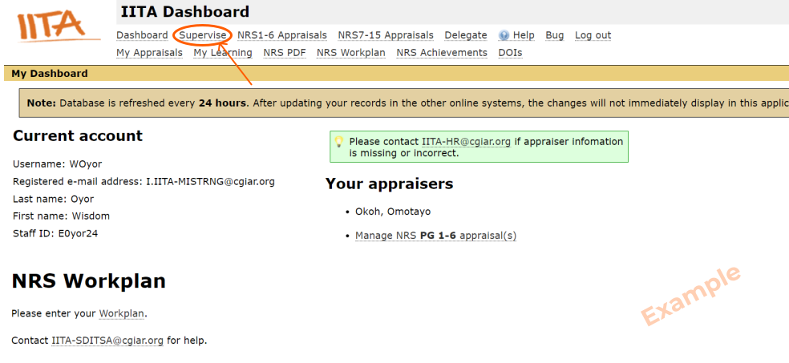
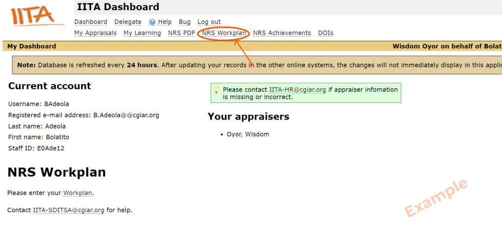
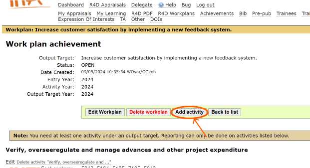
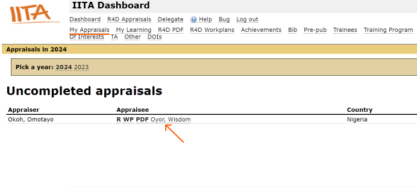
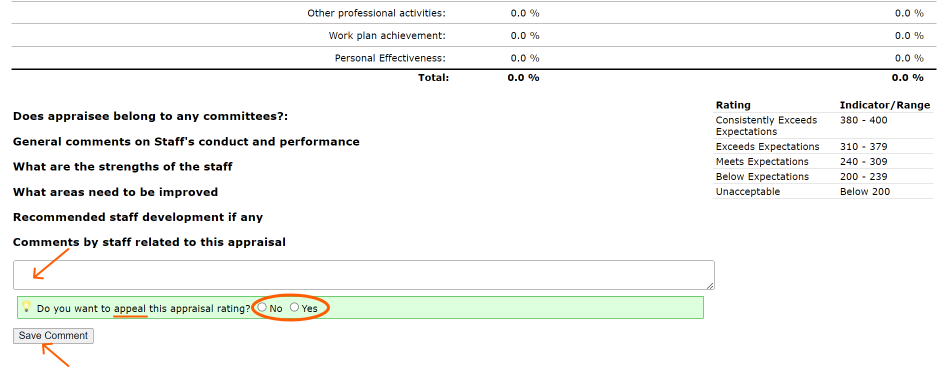

FAQ System for PAR
Frequently Asked Questions
Are you an APPRAISEE?
Are you an APPRAISER?
Are you an NRS/IRS Professional?
Are you an R4D/P4D/Services Professional?
Are you managing NRS/IRS Professionals' Appraisals?
Are you managing R4D/P4D/Services Appraisals?
- Login to your account
- Check your links to make sure they are complete. It should look similar to this:
- Click "NRS Achievements", and add your achievements for the previous year.
-
Once you're done, go to your Workplan page by clicking on "NRS Workplan".
Proceed to upload your Workplan by adding new records to it OR by importing your Excel (.xls) file.
Make sure you click the appropriate year.
If you need help with this step, refer to the relevant questions in this FAQ page.
- Submit the work plan
-
Get it approved by your appraiser.
You may reach out to them to notify them that your Workplan has been submitted for appraisal.
- View your appraisal information by clicking on the appropriate link, e.g:
Click the "My Appraisals" link in the dashboard to view this page.
Make sure you click the appropriate year.
You can generate/download:
- Your Report, by clicking R.
- Your Workplan, by clicking WP.
- Your Appraisal Record PDF, by clicking PDF (if link is displayed on your page). - On the following page, scroll to Part IV. Add your comment, and indicate if you want to appeal or not.

If they're not, refer to the question "What do I do if my NRS/IRS Workplan links aren't complete?"


As an Appraiser, your role involves reviewing and either approving or rejecting your appraisee's Workplan. Here's how:
- On your dashboard, click on Supervise. 
- Switch to the profile of the appraisee, for example, Adeola Bolatito.
- Click on the NRS Workplan link on your appraisee's dashboard. 
- Click on the Approve button.
- Click on Return to yourself.
- On your Dashboard, find the link to manage your appraisals, e.g Manage ...
- Click on the link via which you can access the Workplan.
Make sure you click the appropriate year.
- On the following page, click the Edit appraisal, and fill the form appropriately
- On the "Edit appraisal" page, click on Preview and Finalize only after you have completed all these processes
- After clicking "Preview & Finalize", thoroughly review the appraisal, then click "Submit Final Score".


Ensure that the appraisee adds their comment.
Make sure that all the Workplan statuses say YES


As an Appraisee (R4D/P4D/Services), you have a few tasks to complete. Here's a step-by-step guide:
-
First, as a non-new staff, you need to add your Achievements:
- Click on Achievement on your Dashboard.
- Pick the appropriate year.
- Click the appropriate link as shown below. E.g Add achievement to "[Workplan Activity]"
- Type in your Achievement.
- State the Completion(%).
- Click Update.
-
Next, submit your Workplan:
- Click the appropriate link to access your workplans, e.g. R4D Workplans.
- Pick the appropriate year.
- Click on add new records to your Workplan [year].
- Select the appropriate Performance Criteria.
- Type in your Performance Criteria Description.
- Update the Activity Year and Output target/products/deliverables/research outputs/milestones Year appropriately.
- Click Update.
- Click the appropriate link to your workplan.
- Click Add activity. 
- Fill the form appropraitely and click Update.
- You can also edit your workplan.
-
Next, get Appraised:
- Click My Appraisals.
- Click the link to access your Appraisal. 
- Fill the form appropriately.
- Add your Comments.
- Indicate if you want to appeal or not.
- Click Save Comment. 
NB: If your total weights are not 100%, please refer to your supervisor to rectify that.
As an Appraiser, your role involves reviewing your appraisee's Workplan. Here's how:
- On your dashboard, click on the appropriate link, e.g Manage R4D appraisal(s).
- Click on the name of your Appraisee to edit their appraisal record for the current year.
- NB: As an appraiser, you can generate/download:
- The report for your staff, by clicking R.
- Their Workplan, by clicking WP.
- The Appraisal Record PDF, by clicking PDF.
- Fill the form and score your appraisee appropriately.
- Click on Preview and Finalize only after you have completed all these processes.
NB: These instructions apply to you for your R4D/P4D/Services Appraisees.
You can also click the R4D Appraisals.
NB: If the total weight of all the criteria is not 100% for the current year and next year, please edit accordingly and ensure that the total weight for both years equal 100%.
Click Save draft if you're not ready to submit the form.
Ensure that the appraisee adds their comment.
- On your dashboard, click on the appropriate link, e.g Manage R4D appraisal(s).
NB: These instructions apply to you for your R4D/P4D/Services Appraisees.
You can also click the R4D Appraisals.
Generate/download: The report for your staff, by clicking R.
1. On your dashboard, click on NRS Workplan
2. Click on import new workplans from Excel (.xls) file.

3. Choose a file, and then Upload.

Important: Make sure the Excel file has the extension .xls (not .xslx)
One approach is to add new records to your Workplan directly on the site. Here's how:
1. On your dashboard, click on NRS Workplan

2. Click the appropriate year: e.g 2024
3. Click on the link add new records to your Workplan for the appropriate year

4. Enter the workplan objective, and click update

5. Click on the Details button on the Workplan

6. Click the button Add Kpi..(i.e Key Performance Index)

7. Fill the form

8. Click Update

9. Click Submit

1. On your dashboard, click on Supervise.
2. Switch to the profile of the appraisee, for example, Charles Mwizerwa.
3. Click on the NRS Workplan link on your appraisee's dashboard.
4. Click on the Approve button.
5. Click on Return to yourself.
If you can't find your NRS/IRS Workplan links, please click here to send an email with the required details to resolve the issue.
When you click on that link, you'll be taken to your email application, pre-filled with the recipient's address. There, you are to provide the relevant information.
-
Definition:
- An R4D Workplan is a plan for a specific year within the PAR system.
- It consists of one or more workplan entries and additional text detailing planned activities.
- Information entered here is used to generate the annual Workplan PDF document.
-
How to create yours: Workplan Entry Details
- Create a new Excel file with extension .xls
- Output target description.
- Actual outcome.
- Intended user.
- Participating and beneficiary countries.
- Entry year, activity year, and output target year.
- MTP Program linkage (if applicable).
- Output target type (e.g., Practice, Materials, Policy strategies).
- Outcome and impact.
Here is the Format you should follow:
Workplan Objective | KPI Text | KPI Activity | Milestone 1 | Milestone 2 | Milestone 3 | Milestone 4
Your Workplan entries should capture details like:
Please contact IITA-SDITSA@cgiar.org if you have any further questions.
We welcome your feedback and suggestions on how we can enhance our application to better meet your needs.